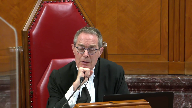
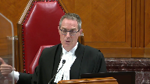
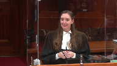
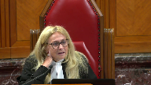
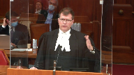
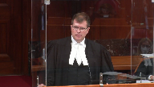

Deans Knight Income Corporation v. His Majesty the King
This transcript was made with automated artificial intelligence models and its accuracy has not been verified. Review the original webcast here.
Justice Wagner (00:00:26): Good morning.
Please be seated.
The case of Dean’s Knight Income Cooperation against His Majesty the King for the appellant Dean’s Knight Income Cooperation, Barry R. Crump, Heather DeGregorio, Robert Martz, and Jenny Han.
For the intervener, Canadian Chamber of Commerce, Steve Suarez, Laurie A. Goldback, Elizabeth Egberts.
For the intervener, Tax Executives Institute Inc., Al Meji, Edward Roe, and Joanne Vandal.
For the respondent, His Majesty the King, Michael Taylor, and Perry Dirksen.
For the intervener, Attorney General of Ontario, Alexandra Clarke, Donna Salmon, and Jennifer Boychuk.
For the intervener, Agence du Revenu du Québec, Pierre Zemetic, and José Fournier.
Mr. Crump.
Speaker 1 (00:01:49): Good morning, justices, chief justice.
I’d like to start this morning by giving you a brief road map of where we plan to go with our submissions.
First I will be addressing stage one of the abuse of tax avoidance analysis starting with the determination of the object spirit and purpose of the provisions at issue.
As part of this I intend to discuss the importance of this court’s decision in Doha and how it fits within a GAR analysis.
Then we’ll be bringing your attention to the similarities between this case and the Canada trust co case and specifically how Canada trust co directs that the GAR should apply when we’re dealing with a provision that has a well established meaning.
And then my friend Mr. Crump will be addressing stage two of the abuse analysis and why in the appellant’s respectful opinion the court of appeal here committed an error in not following this court’s guidance to identify a palpable and overriding error in the reasons of the trial judge.
And so this case is about the general anti avoidance rule in the income tax act, also known as the GAR, and how the GAR should apply when we’re dealing with a provision such as section 111 sub 5 which has a long history, has been interpreted by this very court and is well understood by both parliament and taxpayers.
And so just as an aside before I go any further, I will be referring to section 111 sub 5 throughout my submissions, but we are also determining the object, spirit and purpose of sections 37 sub 6.1 and 127 sub 9.1.
And in lower courts we focused on determining the object, spirit and purpose of 111.5 and then applying that same object, spirit and purpose to those provisions.
We would proceed on that basis as well in this court.
I just bring that up because it’s important to remember while we’re always talking about 111.5 that we are dealing with multiple sections of the act here.
And these are not
Justice Rowe (00:04:02): I am delighted and gratified and made optimistic by the fact that you’re going to look at the statutory scheme as an integrated whole and not disaggregate it into elements which you will then interpret in isolation.
Speaker 1 (00:04:20): Thank you, Justice Roe.
That is our intention today.
And so these are not the only sections of the Act that trigger consequences when there is an acquisition of control.
But the uniting feature in the ones we are addressing today is that they form part of Parliament’s purpose to encourage certain types of behaviour in the Canadian economy.
Section 127 is the provision that gives you deductions when Canadians engage in scientific research and experimental development activities in Canada.
And section 37 is a bit of a companion provision that provides a tax credit.
It’s called an investment tax credit for every dollar that you spend on scientific research and experimental development in Canada.
And so these particular tax deductions and credits, they are subject to restrictions on an acquisition of control just like losses are.
And so this court is well versed on the GAR having rendered five decisions on it.
And yet we are here today because despite this court’s holding that GAR cannot change the meaning of provisions of the Act and despite this court’s repeated cautions not to search for a broad overriding policy that isn’t rooted in the provisions themselves, in our respectful opinion the federal court of appeal has done just that in this case.
The decision by the court of appeal failed to do an independent object, spirit and purpose analysis of the relevant provisions.
It searched for the broadest possible formulation of a policy against lost trading.
And in finding that broadest of purposes, it relied on purpose statements from public servants, a 1963 statement by the minister of finance and a 1988 article by a department of finance official as well as the general statement from this court in Matthew to change the object, spirit and purpose that had been found by the trial judge.
Justice Rowe (00:06:26): I think the article to which you refer was written by an obscure person in the Department of Finance by the name of David Dodge.
Speaker 1 (00:06:37): So we might beg to differ about whether or not David Dodge is a failure, but I take your point, Justice Roan.
Justice Kasirer (00:06:44): Sorry, just more, less, is your point that that’s extrinsic evidence and it’s not, we shouldn’t take it into account?
What’s your point in?
Overlapping speakers (00:06:54): So my…
Justice Kasirer (00:06:55): You didn’t cast an aspersion, but you certainly suggested that this shouldn’t lead us in our understanding of object, spirit and purpose.
Is the extrinsic evidence not helpful?
Speaker 1 (00:07:10): So extrinsic evidence is indeed helpful, but it cannot replace the unified textual, contextual and purpose of analysis.

It finds its place within it.
And in fact, the purpose statement from this court in Matthew, which was relied on by the Court of Appeal, was also considered by the trial judge in finding the object, spirit and purpose.
It needs to be purpose statements need to be unified with the text and context.
That is why this court says that we do a unified analysis.
The purpose does not trump the text.
The text does not trump the purpose.
Justice Côté (00:07:44): But here, Mrs. De Gregorio, is it your position that the purpose is limited to the literal meaning in section 111?
Speaker 1 (00:07:55): So, no, that is not the appellant’s position, that it is limited to the text, but it is our position that the object, spirit and purpose is quite clear of parliament.
And when you find that object and spirit and purpose, it’s not that the gar can never apply or that there may never be a way to abuse it, but it was not abused in this case.
And so the appellant’s position is that when the Court of Appeal relied on these purpose statements to effectively change the analysis or the conclusion of the tax court, it was finding that parliament’s intention is something different than what this court found it was in Doha, and it muddied the distinction between the de jure and de facto tests.
So when finding that the object, spirit and purpose is to target acquisitions of actual control, the Court of Appeal stated that it includes forms of de jure and de facto control, but that actual control is different from de facto control.
Justice Brown (00:09:02): Do you take the view that de jure and de facto are binary and between the two of them cover everything that can be covered in considering degrees of control?
Overlapping speakers (00:09:18): So, effectively, yes.
Um, the… I don’t know if…
Justice Brown (00:09:21): I hope the word effectively is helping because we also have effective control floating around too.
Speaker 1 (00:09:27): Fair enough.
So there are the parliament has distinguished between these two types of control and we know this because Duhas tells us this.
So de jure control is the legal control that flows from a corporate statute.
It’s the mechanism that the applicable business corporation statute provides for shareholders to control the company.
Overlapping speakers (00:09:52): So the constatting document.
Speaker 1 (00:09:53): The constating documents, yes.
De facto control was deliberately implemented by parliament to essentially cover the field where control has been found that is not de jure control.
The words of 256 sub 5.1 indicate this, right?
It says that de facto control is when a corporation is controlled directly or indirectly in any manner whatever.
Justice Brown (00:10:22): Are there any limits on what might be considered relevant when assessing de facto control?
Speaker 1 (00:10:30): Well, sure, yes.
And in fact, this has been heavily litigated at the trial court and at the court of appeal.
And in particular, one of the cases that we note in our factum and that I can discuss today is this happened with the McGilvery restaurant case very recently.
So in 2016, there was a dispute about whether a person had de facto control in the McGilvery restaurant case.
And the court of appeal went through essentially all of the jurisprudence on de facto control and said I conclude that de facto control is also the search for control over the board of directors, just like de jure control, but that you can consider a much broader range of factors than in de jure control.
Justice Côté (00:11:17): where would you where would you situate if you can the actual control i mean the test adopted by the federal court of appeal here is it something in between is it something equivalent to the facto control
Speaker 1 (00:11:31): you think?
This is the problem that I don’t have an answer for that question.
And this is the problem that I suspect has brought the interveners here today as well.
We have seen significant criticism of this decision in the tax community as tax practitioners are attempting to discern how they are supposed to determine whether there is a tax.
Well, well, well, well, well, well, well, well, well, well, well, well, well, well, well, well, well, well, well, well, well, well, well, well, well, well, well, well, well, well, well, well, well, well, well, well, well, well, well, well, well, well, well,
Justice Rowe (00:11:53): Well, now let’s look at what might be called the material motive.
If your business is about structuring these transactions, you want the gir to cease to have any meaning because you want to play the game of a jigsaw puzzle to get around the literal meaning and say, aha, my client saves a lot of money and I get a nice fee.
So I’m not at all surprised that there are persons here who wish us, as a matter of law, to say that the gir is almost ephemeral.
But they would say that, wouldn’t they?
Speaker 1 (00:12:42): Well, I wouldn’t presume to speak for them, but what I can say is that Canada Trust Code tells us that Parliament intends to advance the purposes of certainty and predictability along with the GAR.
And so that is what tax practitioners must do when they’re advising their clients as to whether they can engage in certain types of tax planning.
And this court has repeatedly confirmed that tax planning in and of itself is not abusive.
And in fact, Parliament intends people to take advantage of the tax benefits under the Tax Act.
Justice Kasirer (00:13:17): Mr. Gregor, can I bring you back to Justice Brown and Justice Cote’s question about actual control and whether, where it fits in this binary world that you associate with DUHA.
And I guess it, my question is going to go to DUHA, which you put great emphasis on in your factum and for good reason.
I agree with you that actual control as it’s used by the Federal Court of Appeal, and I say so respectfully, is slightly hard to pin down.
But I wonder about your answer, finding the answer in DUHA, if DUHA was a 1985 pre-GAR case and engaged a kind of analysis that doesn’t deal with the preoccupations and the two-step analysis that we have here.
You’ll, we’ll hear later today that, from interveners and others, that maybe DUHA would have been decided differently under GAR.
To what extent is the nomenclature de jure de facto in its apparent sort of alpha omega quality still helpful if DUHA is an old case that doesn’t deal with GAR?
Speaker 1 (00:14:33): So I have two points in response to that question.

The first is that Doha doesn’t just say, well, Doha does say there’s de jure in de facto, but what the trial judge did in this case was put Doha into the overall unified textual, contextual and purpose of analysis and determined does it stop there?
And I would suggest that the trial judge did not say that it stopped at Doha because the trial judge actively considered the provisions of the investment agreement whereas Doha has said that you would not do that in a control situation.
So Doha gives us what parliament’s purpose is of finding effective control, and so you’re searching in a gar analysis for whether or not you have achieved that type of control.
You may not have done it strictly under the constating documents, but have you abused the provision by essentially achieving that same result, which is when the gar would apply?
And my second point is that I would suggest to you that Justice Iacobucci in Doha did an analysis that was substantively purposive, right?
He didn’t just search for the textual meaning of control.
He searched for why de jure control was the test chosen by parliament in section 11 sub 5.
And Justice Iacobucci determined the reason why parliament chose it for this particular provision.
That’s the language of purpose, right?
The why and the reason.
And that is why actually in Doha, Justice Iacobucci didn’t just slavishly follow the bucker fields test which had been the accepted test up until that time.
Up until Doha, control was determined under the bucker fields test which said you just look at the share register, you count the votes and that’s how you know who is in control.
And that’s because it’s the mechanism under corporate law that gives you control.
But this court in Doha recognized that if you take this literal interpretation without recognizing the reason why it’s there, then just that strictly textual reading could lead to an artificial result.
That was specifically found in Doha.
So this court then concluded that when parliament’s using the control test which it described to be de jure control, its intention is to capture effective control in a way that’s analogous or equivalent to the power to elect the directors which would be control over the corporation.
So I would suggest to you that in doing this, this court was actually interpreting section 115 harmoniously with parliament’s intention.
Justice Kasirer (00:17:18): of a consideration of abuse in DUHA is thus irrelevant to our determining what 111.5 is all about.

I mean, is your point is that DUHA would have been decided the same way even if GAR had been enacted?
Is that your point?
Overlapping speakers (00:17:40): So I can’t I can’t speak to whether Duhal would have been decided.
Justice Kasirer (00:17:43): Maybe none of us can guess what Justice Iacobucci would do today.
I’m asking you what you think.
Speaker 1 (00:17:49): So I think that DUHA only can take its place within the GAR analysis because it wasn’t a GAR case, right, so it doesn’t tell us how the GAR would apply to its specific set of facts, but it does inform us as to what the word control means, what Parliament intended for it to mean when it put it in this provision, and therefore that has to form part of the textual, contextual, and purposive analysis when looking at these provisions.
Justice Brown (00:18:21): I have another question and maybe the answer is just as simple as because it goes to controlling who is a director and who isn’t.
But why is any particular factor considered under de jure or de facto?
Consider, for example, an investment agreement.
Why would that be considered under de facto, not under de jure?
Speaker 1 (00:18:45): Well, so in duha, the finding that de jure control is that it comes from constating documents which are documents that are provided under a business corporation statute in Canada.
There are business corporation statutes in each province.
There’s also one federally.
And so that statute actually sets out the mechanism for not just for controlling a corporation, it sets out everything, right, how to create a corporation, what actions corporations can take, who has specific rights to do things in a corporation, who has liabilities.
And so in duha, what this court found was that that’s important for de jure control because that’s when you know, that’s how you control the corporation is through having the voting rights because the statute says that directors control the business and affairs of the corporation.
And duha said, yes, but directors can be voted in or out.
What matters is who can do that.
Well, that’s under the statute, that’s the shareholders.
And then duha went a step further because that would have just been bucker fields if you stopped there.
Under a usa, which is a constating document and which the legislation in that case provides can actually put a shareholder in the place of a director in terms of dictating how the corporation will manage its business and affairs.
So the reason that a unanimous shareholder’s agreement could be considered is because the statute said you can also, you can effectively get to the same place as voting under one of these agreements because the statute says you can.
Justice Jamal (00:20:29): Mr. Gregorio, you started by talking about encouraging behavior in the Canadian economy and that’s what the rules sought to do and you also referred to how this is not dissimilar to Canada Trust Co., where of course there was a finding that the transaction wasn’t that different from an ordinary sale-leaseback transaction.
What I’d like to hear at some point is take us to this transaction.
Why is this transaction the sort of behavior that the rules parliament intended to encourage in the Canadian economy and having regard to what the respondents have put against you in their condensed book, which is an analysis of this particular transaction, the stripping down of the organization down to its tax losses, reorganization and then contractual restrictions on the ability to issue new shares to do anything else other than this?
Why is that analogous to an ordinary sale-leaseback transaction?
Why is this the sort of thing that parliament sought to encourage?
Speaker 1 (00:21:33): Sure.
So I think you have to start with section 111, one of the act, which is the general provision that states when you can deduct losses.
This is parliament telling you how you can record your losses, how you can carry them forward and when you can deduct them. Okay.
And so this is the general provision.
And then 111.5 is only the restrictive provision that tells you when you can.
Justice Rowe (00:21:56): But isn’t the real purpose behind 111.1 and 111.5 to say that while taxes are assessed on an annual basis, because they have to choose some time unit, it is unfair to the taxpayer to limit losses that are related to an ongoing business to the 365 days?

And that is, in fact, productive to the Canadian economy.
It’s fairness to businesses.
And it’s productive to the Canadian economy that as businesses go through the growth cycle or through the economic cycle and have periods of loss and then profitability, that in the end, the taxpayer can draw together profits and losses from their enterprise so as to even out their profitability and therefore their tax liability.
That seems to me to be the rationale, which is completely different from an artificial transaction, where you take what’s essentially a dead company and you transfer in losses on the books to another operating company to cancel out profit when there’s no evening out of profits because it’s not the same enterprise.
Isn’t that really what the scheme was intended to do?
Isn’t that like the OSP?
Speaker 1 (00:23:35): So certainly that is indeed one of the purposes of section 111 is to smooth income because otherwise it’s unfair of the government to artificially pick this one year period and if I happen to have earned a whole bunch of money in this 365 days and I pay tax on it but then in the next 365 days I don’t that I can’t sort of even it out.
So that is certainly one purpose of 111 and that was probably the original purpose of 111.
I think that’s in the authorities and what not around the time that losses began to be carried forward.
But we’ve moved far beyond that.
Section 111 does quite a bit more than that now.
It has gone from you can apply your losses from this business against the same business in following years to smooth out your income.
Well then parliament went and said well actually you can apply it against any other business opening up the door for encouraging taxpayers to try new lines of business, try other activities, make other investments and you can still apply your losses from one business against another
and then they went further to allow you to apply it from one source against any other source.
It’s gotten broader and broader.
Justice Rowe (00:24:52): Yeah, but what we’re still talking about, I mean, you could have a conglomerate.
You could have said, we’re making tires, well, now we’re going to start, as part of our overall business plan, we’re going to make dishwasher detergent, and we’re going to get nailed because it’s going to be hard to break into the dishwasher detergent market, whereas we’re very well established in the tire market.
But you know, it’s all sort of one enterprise, we’re an integrated company, we’re just sort of a conglomerate.
I get it, all of that makes perfect economic sense, and in policy terms, it hangs together.
But what in heaven’s name does that have to do with a completely artificial transaction where you strip down a company which is dead, take the tax losses, and combine it with a company which has nothing to do with the earlier enterprise and say, aha, now we’re going to reduce our tax bill, and that’s in accordance with the policy of the Income Tax Act.
Speaker 1 (00:25:54): So my answer to this, and I hope that this will actually now answer your question as well, Justice Dumas, which I apologize I have not gotten to yet, is that, so we know that 111 gives this broad ability to deduct, and then we have to ask when does Parliament want us, when does Parliament consider that lost trading has occurred so that it has to be restricted going forward?
And the provisions that we have in the act tell us, and they tell us what the mischief is.
Section 111.5 is aimed at when a person or group of persons, which is essentially one unit under the silicone graphics meaning, when a person acquires control of the corporation.
And the mischief that’s aimed at there is that when a person acquires control of a corporation, they have unilateral ability to force the corporation to do whatever they want.
No person can stand in a control person’s way.
If the board of directors tries to act independently and do something, the control person will simply vote them out or replace them.
And so that’s the line that Parliament has said.
That’s where lost trading occurs.
And the reason why that’s the line is because in that situation, the new control person can simply take their existing business, their already earned income, they can dump it into this corporation, soak up the losses, and there is no economic benefit to Canada in that whatsoever.
That’s just simply applying someone else’s taxpayer A’s losses against taxpayer B’s income.
And that we know.
That’s what Parliament wants to prevent.
Justice Côté (00:27:30): So, Ms. de Cagorio, how Section 256.729 can help, if they can, to determine the purpose of Section 111?
Speaker 1 (00:27:46): So those sections are proper contextual provisions to consider in the contextual analysis.
256.7 is essentially it’s a very complex provision.
We’ve put it in our condensed book, but it’s I don’t invite you to read it unless you’re really interested.
It provides essentially what it does is it sometimes deems there to be not control acquired when things like related people are doing transactions, but then it also deems situations where control is acquired.
And what’s important to note is that when you look at the provisions that deem control to have been acquired, it’s aimed at situations where a large corporation acquires a small corporation, either through an amalgamation or through a reverse takeover or some clever way that you eventually essentially push the corporations together and now the large corporation can use the small corporation’s losses.
And so what section 256.7 does is it ensures that in that scenario the small corporation always has an acquisition of control.
That’s what 256.7 does and that further demonstrates the mischief.
The parliament doesn’t just want a to use b’s losses.
And 256.8 is actually was considered by the trial judge in this case, both as part of the context of 111.5 and independently as to whether it had been abused on its own.
It’s an important contextual provision because it tells you what kind of rights parliament is concerned about that you might have to control.
On 256.8 the trial judge looked at it and said every right that it invites you to look at and it actually incorporates the rights from 251.5b, every one of those rights relates to ownership of shares or voting of shares and the trial judge correctly noted that’s parliament telling us that’s the type of control that they’re worried about.
They’re worried that you could have that type of control.
You’ve got a right to do it, you just haven’t exercised the right and if the purpose of not exercising that right is to avoid these loss restrictions, you’re deemed to have exercised it and then you go to the regular de jure control test.
Justice Kasirer (00:30:07): Correct me if I’m wrong.

256.8 is a specific anti-avoidance rule that maybe I’m wrong and you’ll correct me, but to my ear it expands the traditional meaning of de jure, control in a specific context.
It’s part of a specific exercise, a bit like 111.5, where parliament has said here’s some specific instances that we’re dealing with, but it doesn’t speak to the relevance of the general, except indirectly, to the general anti-avoidance provision.
So in that sense, what’s the, help us understand the relevance of these specific rules.
I would add to that the subsequent amendment 256.1, which was alluded to in the courts below, and which for some of us would, subsequent amendment, maybe we shouldn’t talk about that.
How do we take these into account when we’re trying to discern the mission of the general anti-avoidance rule?
Speaker 1 (00:31:14): Sure.

So these specific anti-avoidance rules tell you what parliament is looking for when it’s looking for whether or not there has been lost trading and what you’re testing for.
And what every one of these provisions does is continues to rely on a certain type of test. Right?
So 256.1 as you mentioned which we try not to put too much weight on because it was enacted subsequently.
But it was enacted to address transactions somewhat like the appellants here.
And each parliament sees the bounds of it.
And that under the general anti-avoidance rule, we look to those to determine what’s parliament’s purpose.
Justice Martin (00:31:57): Can I ask you this question?
You criticized the federal court of appeal, I think, by saying that they went too high a general policy and that they breached the approach in Copthorne.
But when I hear your description of 111.1 and 111.5, it seems to me that there is a very specific goal in terms of the policy that’s rooted in these provisions is you can really only deduct your own losses under 111.1 and if you get your new taxpayer, there’s limits on how you can do that.
So why isn’t the policy rooted in the provisions that you’re citing?
Speaker 1 (00:32:47): I’m sorry, I’m not sure I understood the last part of your question.
Well, I…
How is which policy not… You’re criticizing…
Justice Martin (00:32:53): Having the federal court of appeal for being too general, right, that you can’t abstract a general policy statement.

You’ve criticized it on the basis that they’re using extensive sources, et cetera, et cetera.
My point is a simple one, which is when I read 111.1 and 111.5, it looks like there is a specific statutorily based provision that parliament has put in about lost trading and it’s you can deduct your own losses and when you become a new taxpayer that’s something that has to be scrutinized under 115.
Why isn’t that a specific policy encapsulated in the current legislation that can in fact be used to ground an analysis and guard?
Speaker 1 (00:33:43): So I think that you’re right that that is a policy of Parliament and that the change of control, that is how Parliament tells you when a corporation has become a new person.
And so that’s the standard that it’s chosen.
And the reason why, as I’ve suggested earlier, is because when you get control of a corporation, you can engage in mischief that isn’t productive and that simply applies losses from one party to another.
But that isn’t what happened in this case, right?
Matco made an investment in the company, but by the time that the tax benefit was realized in the appellant, Matco was a less than 5% shareholder.
And it was a widely held corporation that had started a whole new business, had raised new money, was taking risks, and was indeed successful, and paid out dividends to its shareholders that were taxable.
And so the appellant says that this was not the abuse that Parliament aims these rules at.
Parliament aims this at lost trading, not at restarting a corporation, and finding value in some of the things that
Justice Rowe (00:34:47): You are saying this is not lost trading, that the dead company had value other than its accumulated losses.
And I say that that is difficult to square with the facts of this case.
Speaker 1 (00:35:03): So it’s not lost trading in the way that Parliament has told us it’s lost trading, and it’s not accomplishing the mischief that these rules, that Parliament aims to address with these rules.
Justice Kasirer (00:35:16): And Justice Roe’s question is if it’s accomplishing a different kind of mischief, I presume you’re kind of shifting to the abuse portion of your argument here.
So what we have here is quite an original transaction, yes, that transcends the URA test, but if you look at the investment agreement and the covenants on NUCO and MATCO’s consent required from those, and then if you add to that what your colleagues call the unanimous shareholders agreement breaker transaction, which means that the investment agreement is not going to be unanimous shareholders, I mean that’s how I read it, maybe you’ll tell me I got it wrong, so that we’re going to avoid the URA control there too.
We’ve got something, to use the language of Justice Roe, that’s different, and frankly, while it doesn’t fit the DUHA test, looks like it’s an abuse.
How is that not caught by the second leg of GAR?
Speaker 1 (00:36:35): So, a couple of points to answer your question, again.
I’d like to start with the position that the trial judge considered that this type of transaction, which is commonly referred to by tax practitioners as a recapitalization and restart of a corporation, that this transaction could have been done without the assistance of Matco and that the losses would have been available for deduction, that it’s not abusive for a corporation to find new shareholders, start a new business, completely change its business if it wants.
There’s nothing in the provisions that indicate that that is an issue other than if somebody acquires control.
And so then this is the question of whether the investment agreement puts us into the category of control as Parliament contended.
And I’ll just address quickly first the USA breaker transaction reference that my friend brings up, because it is indeed true that Matco had an affiliate purchase 100 shares of the corporation right before they entered into the investment agreement.
And Mr. Allen Ross, who was principal of Matco, was very candid in his testimony and admitted that there were a couple of purposes, but one of the purposes was to ensure that it wasn’t a unanimous shareholders agreement.
And he said that it was because he was aware there was a case and he didn’t really want to have to research it.
But the appellant’s position is that that’s not relevant in this case, because we didn’t rely on the investment agreement not being a unanimous shareholders agreement.
And the trial judge didn’t either.
This agreement was freely looked at to see if it contained the type of provisions that would give control, as Duhal looked at a USA.
Justice Kasirer (00:38:22): In fairness, it would have been a bigger problem if it had been a unanimous shareholders’ agreement at your end.
In fairness, I mean, Mr. Managing Director of Matco, Mr. Ross, in acquiring 100 shares may have had other objectives, but it was a happy consequence that the unanimous shareholders’ agreement characterization wouldn’t apply.
I mean, we wouldn’t be here today if that was…
Speaker 1 (00:38:54): Respectfully, I disagree that it would have been worse if it was a USA.

Because if you look at the provisions of the investment agreement and what my friend refers to as the restrictions, none of these were legal restrictions on the board’s ability to act or NUCO’s ability to control them.
These were promises for a one-year period while matco went out and searched for corporate opportunities and they also provided that there would be a specific consequence if they were breached.
So matco knew full well it didn’t have control.
That’s why it said if you do this, then I would like my money back because then I cannot successfully do this corporate opportunity.
And during that one-year period, NUCO maintained the fundamental ability to control the appellant.
It always had the right to vote all of its shares.
It could elect the entire board of directors.
It could sell its shares to any third party without matco’s consent.
It could accept or reject a corporate opportunity and it had the ability to take a better deal if it came along under the agreement itself.
And so these are all provisions or abilities that NUCO maintained that effectively gave it control over the appellant during that one-year period that matco searched for corporate opportunity.
And I think it’s useful to actually look at
Justice Kasirer (00:40:21): Because I don’t, again, you know it better than me, but I don’t see NUCO being quite as free as you describe it.
So I’ve got covenants of parent article 6 in front of me, 61b, other than as contemplated by this agreement, the parent shall not and to the extent applicable shall cause the subsidiary not to, without the prior written consent of MATCO acting reasonably, issue any shares, options, warrants, calls, et cetera, sell, transfer.
I mean, this is not a, this NUCO is not free to do what it wants.
It may, there may be a good reason and it may be circumscribed in time, it may be anchored in this corporate opportunity, but to say that NUCO is free as a bird strikes me as an overstatement, but I may be wrong.
Speaker 1 (00:41:18): Well, I didn’t mean to imply that it was free as a bird.
It made these promises not to do these things that were in the agreement.
With respect to the sale of shares, the agreement actually says except as provided in this agreement and the trial judge interpreted that and found that the agreement did allow for a sale opportunity which was NUCO’s ability to sell its shares without MACCO’s consent.
That was part of his finding when he interpreted this agreement.
So the sale of shares was found to be applicable or allowed by the trial judge.
And I think it may be helpful if we look really briefly at the types of restrictions that were in the DOOHA USA that were found not to affect or cede effective control.
And that is at tab 12 of our condensed book.
Justice Kasirer (00:42:14): He’ll explain because Duhau wasn’t looking at abuse, right?
Speaker 1 (00:42:19): Duha looked at the type of control that was the effective control that parliament searches for in lost trading.
So the provisions, so in article 8, sorry, paragraph 8 of Duha which is in our condensed book, it’s tab 12, it’s page number 150 at the top there.
And so paragraph 8 which is highlighted says the agreement also restricted the transfer of shares so that no shares could be transferred without the consent of the majority of the directors.
It prohibited any shareholder from selling, assigning, transferring or otherwise encumbering its shares in any manner.
And it provided that new shares could only be issued with the unanimous consent of the existing shareholders.
Then further in 6.1 the agreement provided that shareholder disputes regarding business accounts or transactions would be resolved by arbitration.
And the crown in that case characterized these restrictions actually in paragraph 18 which is on the next page of our condensed book there and highlighted.
And said that these restrictions the minister argued that although Mars owned a majority of the voting shares in Duha number 2, the agreement totally neutralized the ability of Mars to manage the company since it effectively prevented Mars from electing a majority of its choice to the board, from dissenting to corporate transactions and applying to the court for the redemption of its shares.
So all of this was considered in Duha and was found not to be the type of control under the USA under the constating document that Parliament intends under section 111.5.
And so as I’ve said, our position is that Justice Iacobucci did a purpose of analysis and determined why Parliament chose control in section 111.5.
Justice Brown (00:44:34): Is there any, just to pull you back to Justice Casir’s point, is there any significance to the trial judge’s statement that CRA is not showing that Article 5.8 was a sham?
Overlapping speakers (00:44:50): I’m sorry, I’m not sure.
Justice Brown (00:44:51): Is there any significance to that?
Overlapping speakers (00:44:53): The concern
Justice Brown (00:44:54): If the concern is that this is an abuse of transaction and that article 5.8 and the restrictions on NUCO is one of the considerations taken to account and concluding that GAR ought to apply to this, is there any significance to the trial judge’s statement of paragraph 60 that the respondent is not shown that this term was a sham or inconsistent with any rights in the agreement or with the agreement read as a whole?
Speaker 1 (00:45:22): So, yes, there is.
And in fact, at the trial, the crown’s principle position was that in fact Matco had acquired a right to get the shares of the appellant from NUCO.
And spent and tested all of these provisions under the agreement both under that assumption and under its argument for the gar.
And what the trial judge found was that nothing in here was a sham.
These were tested with very skillful cross-examination from my friend.
Both David Gould from Forbes, NUCO, and Alan Ross from Matco were tested under cross-examination.
And the trial judge found that the parties meant the terms in here.
There was no secret.
There was no sham.
There was no wink, wink, nudge, nudge.
This was the agreement between the parties and the parties intended to respect it.
And so trying to find that these provisions somehow gave control that is not within the agreement itself, the trial judge wasn’t prepared to do that.
And he also found that these are not the type of provisions that give you effective control as contemplated by DUHA.
Even though it’s not under the agreement.
Justice Brown (00:46:34): using the term effective control.
If effective control means to jury control, maybe we should just talk about the jury control.
Unless effective control is something different and I don’t really do have to say much.
Speaker 1 (00:46:47): I read Duhart to say that de jure control is synonymous with effective control as well.
Overlapping speakers (00:46:51): So let’s just use one term.
Can we agree that it’s going to be to jury?
Happy to do that. Awesome.
Thank you.
Speaker 1 (00:46:57): So by asking this court to find that there is a greater purpose to section 111.5 than de jure control, you’re really being asked to layer another purpose of analysis on top of an already existing purpose of analysis.
And in this case where duha tells us why we have the test, and in duha this court did a contextual analysis, right?
It compared the de facto control test with the de jure control test and noted that parliament had created the de facto control test precisely because there are circumstances where it wants to consider a myriad of factors and not just sources of legal control.
And importantly this court found that if the distinction between de jure and de facto was to be eliminated, that’s parliament’s role, right?
And parliament still to this very day has not indicated that it wants to blur that distinction.
And it’s not like parliament doesn’t know how to respond to cases that it doesn’t like.
Justice Rothstein when he was at the court of appeal in the Gifford case noted that parliament often amends the act in response to decisions of courts and where parliament has had a real opportunity to respond and has not done so, it’s reasonable to conclude that parliamentary intention is consistent with supreme court jurisprudence.
And there’s a really great example of this in the MacGillivray restaurant case.
Justice Rowe (00:48:34): This is a kind of a catch me if you can approach to statutory interpretation.
I mean, I’ve got a new way to put the puzzle together and you do that for a couple of years and then the people in the CRA and the Department of Justice say okay,
okay, okay, now let’s see how we can sort of deal with that one.
And so there’s another convoluted provision put in the act and the tax lawyers and the accountants say, aha, we’ll use like a trust through Bermuda and you know, et cetera, et cetera, and we will come within the specific wording and the game starts again and it goes on and on and on.
And wasn’t GER supposed to change the game?
And you’re telling us, no, GER didn’t change the game, it’s still catch me if you can.
Speaker 1 (00:49:34): So I certainly agree with you that gar is intended to prevent the catch me if you can type of situation.
But when we’re dealing with a provision such as 1115 which has this lengthy history, has been revisited over and over again by parliament, has been interpreted by this court 25 years ago, and it’s not like parliament couldn’t foresee knowing that the jury control has been interpreted the way it is and that de facto control covers other situations, it’s not like parliament couldn’t foresee that investments and transactions could be done with some indicia of de facto control and not trigger the lost trading restrictions in 1115.
And the reason why parliament continues to maintain the certainty in section 1115 is because if you don’t, it will impact commercial transactions.
My friend’s own argument admits that a certain test is required for commercial transactions.
And so let me just flip to my notes on this.
A good example of this would be a banking or lending institution lending money to a corporation with losses. Okay.
So if a corporation with losses wants to go and borrow money, it’s going to sign a very lengthy agreement with the bank or financial institution that will contain a whole list of restrictive covenants and they will say things such as what you can do with your money, what kind of business you must carry on, whether or not you can pay dividends, whether you can touch your share structure.
All of these are indicia of de facto control and parliament doesn’t want corporations who have losses to have to worry when they go and borrow money that this could now cause them to lose access to their losses.
And it’s not enough to just say, well, it’s fine as long as you don’t have a tax intention because only applies on an avoidance transaction.
Because first of all, we know that tax planning is not abusive in and of itself.
And tax planning by corporations is a completely normal thing to do.
They do it every day.
And in fact, the use of tax losses may be relied on to ensure or increase the chance that a company will be able to pay its interest, repay its principal.
And if banks or financial institutions became worried that a corporation might not be able to service their debt or increase their investment because of a risk to their losses, they’ll stop lending to these companies.
It would chill investments in Canada and that’s not parliament’s intent.
That’s why parliament keeps this certain and predictable rule.
That fully explains why parliament has maintained the de jure control test in this.
Inaudible.
Speaker 1 (00:54:13): So the provisions of the investment agreement didn’t give the type of control that we’re considering here.
Am I misunderstanding your question?
Justice Jamal (00:54:23): Well, I think Justice Kaziria took you to a bunch of different provisions in the Investment Agreement and Paragraphs Article 6 in particular that don’t necessarily give to jury control but do seem to be, arguably, to be functionally equivalent in relation to this particular transaction.
Yes, it’s true, you could walk away, but this was the one chance of life, right?
You could walk away from the deal, but this was the one chance of life.
So, I mean, the question is really, is that functionally equivalent to control?
Speaker 1 (00:54:55): So, but being functionally equivalent to control is being in de facto control, right?
And so there’s no space in between these two tests.
Parliament hasn’t indicated that there is something else.
And any time that it does indicate some other standard, it deems you to be in de jure control or captures you in de facto control.
Inaudible.
Speaker 1 (00:55:49): So I think the appellant’s position is that in order to abuse the de jure control provision you would need to achieve control that is analogous or equivalent to it.
It’s not sufficient to just look at factors of de facto control because we know that parliament is well aware of those and has not chosen to make those part of its test for loss trading.
So if you see that you have a de jure control provision, you would need to have a de facto control that is analogous to that of the de jure control provision.
So I think the appellant’s position is that in order to abuse the de jure control provision you would need to achieve control that is analogous to that of the de jure control provision.
Justice Kasirer (00:56:12): You see the frustration in answer to Justice Jamal’s question.
You’re setting up the do-hat, do-you-re control as a test, and then you’re applying the test and saying, there’s no problem here.
It becomes a self-fulfilling prophecy.
I think his question is bang on.
If control is not do-you-re control of the whole of the corporate life, if it’s not de facto control of the whole of the corporate life, but it’s targeted on this opportunity that was put in place for the sale of these tax attributes, we may have something that the Federal Court of Appeal, they might have been looking for a new word, that doesn’t sit nicely with either do-you-re control or de facto control on this binary you describe.
It’s this actual control that they were looking for a tag.
It might not be the best one, but that’s what they were trying to do.
And I think Justice Jamal’s on the transaction itself.
What’s your answer to that?
Speaker 1 (00:57:21): So I think my answer to that is that, um, finding some terms such as actual control or some, some form of control that isn’t analogous to de jure control or isn’t effectively getting you to the same place as de jure control, that is taking a broad policy and replacing Parliament’s words with it and the provisions that it’s given us.
And that’s what Canada Trust Co. has warned us against doing, uh, in these types of situations, right?
That the meaning of section 111.5 and meaning of de jure control must be respected.
And Canada Trust Co. has told us that the textual, contextual and purpose of analysis can only add nuance to the meaning. Okay?
It can’t change the meaning. Wait.
No. Wait.
No. No.
No.
Justice Rowe (00:58:07): What text, context, and purpose is the interpretation of the provision?
Object, spirit, and purpose is the ger.
If you say to us, we must look at the text, context, and purpose of the provision, you are basically saying methodologically, do not look at the ger, which in many instances would extend beyond the simple interpretation of the provision, except in those circumstances where the provision discloses fully its own purpose.
But you come back to it again, and I’ve noted it, you’ve done it repeatedly, I haven’t kept the count.
We need to look at text, context, and purpose to the provision, and that is the end of the story.
But it is the end of the story in terms of interpreting the provision itself.
It is not the end of the story when it comes to giving effect to the ger, object, spirit, and purpose.
Speaker 1 (00:59:07): I apologize if I keep coming back to the same point.
I think what might be helpful to answer this question and in the very brief time that I have left is to take you to tab 11 of our condensed book where we have laid out a side-by-side comparison of the textual, contextual and purpose of analysis that was done by each of the lower courts.
So we’ve sort of paired the tax court of Canada’s analysis next to the court of appeals analysis to demonstrate I won’t walk you through and read it because it’s literally just copied and pasted provisions but to demonstrate how the trial judge in this case did a proper textual, contextual and purpose of analysis. Okay.
He analyzed section 111, section 115 and section 256.8 because these are the provisions that work together to tell us when parliament wants losses to be deducted and when it wants them to be restricted.
In doing that, he looked at the meaning of control and the textual part.
He followed this court in Doha.
Then he did a historical review of the provisions.
He went all the way from 1958 up to present day.
Then he did a contextual review of the provisions.
He considered section 256.7, section 256.8 and the de facto control test.
Then he went to the purpose of analysis.
He started his purpose of analysis with this court’s comment in Matthew that there is a broad policy against loss trading.
But he considered that in light of what parliament has done and what Doha has said.
And he concluded that the object, spirit and purpose is to restrict them.
Speaker 2 (01:00:55): to expand the scope of GAR.
If the Crown’s proposed OSP, Object, Spirit and Purpose, is accepted, there are no rules anymore.
GAR is a free-for-all, it’s a smell test, and that’s not what Parliament intended.
That is why this is the most important tax case since Canada Trust Cope.
The Chamber has a shared interest with the Crown in having a robust and effective GAR that prevents abuse of tax avoidance that costs us all.
We come not to bury GAR, but it’s important not to have a GAR at all costs and not
and it does not overreach Parliament’s intent.
The GAR was meant to be a provision of last resort.
It can’t be stretched beyond its limits every time the CRA sees something that it wished the law captured, but doesn’t.
This case illustrates how badly the Crown has lost its way on GAR and the importance of greater rigor and process in conducting an OSP analysis.
This Court’s guidance will make it easier for the vast majority of taxpayers who want to be who want to be compliant with the law while paying no more than what the law says they owe to do so and make it harder for the small minority who don’t care about complying to escape paying their fair share.
I’m not a litigator, this is my first time in Court, but I’ve been a mergers and acquisitions corporate reorganizations tax lawyer for over 30 years
and I know these rules.
The analysis in our factum is exactly what tax planners would do if someone said I’m being pitched this loss utilization plan, do you think it works?
It reflects the goal of an OSP analysis, an objective bona fide good faith effort to determine what Parliament intended without any preconceived conclusions and without labeling anyone who takes any step of any kind to pay no more than what they owe under the law as aggressive or a tax avoider who deserves whatever they get.
That’s the relevance to this case of the Duke of Westminster principle this Court has previously cited.
An OSP analysis must be done objectively without the value judgments this Court has warned have no place in of our analysis.
In fact, the David Dodge article that we cited paragraph 22 of our factum states that the government considers that these corporate loss rules are not anti-avoidance provisions per se and that a taxpayer’s purpose is irrelevant in their application.
Unfortunately, the Crown is not listening and dressing up the Crown’s unfair labeling exercise as fairness to all taxpayers is fooling no one.
Fairness to all taxpayers is ensured by determining and respecting the law as Parliament intended.
The fundamental problem with the Crown’s approach is that they believe GAR gives them the right to make up the rules as they go along, a smell test.
That became completely transparent in paragraph 28 of the Crown’s reply to our factum where they say there is no basis to take a tax ruling given to one taxpayer as indicative of a legislative rationale that can be applied to other taxpayers.
They really believe that the legislative rationale of a provision can be one thing for one taxpayer and something different for another.
I’ve obtained CRA tax rulings for clients.
The whole reason they release edited versions publicly is because they are relevant to other taxpayers even if they’re only binding on the one that actually applied for them.
This court has absolutely held that they are relevant as extrinsic aids and statutory interpretation.
If nothing else, those three CRA rulings referenced in our factum show how far away the Crown is from meeting the clear and unambiguous standard.
As our factum sets out, all of the text and context indicates Parliament intended the corporate loss rules to apply where a person attains such dominance over the decision-making processes by which a corporation acts as to reach the level of certainty and immediacy that having de jure control entails.
That is the legislative rationale and the Crown has shown nothing to support the threshold for the application of these rules and their legislative rationale was being something lower than that.
Yes, there are corporate loss restriction rules that apply where certain things occur, where a threshold is met, but there is demonstrably no general policy that says the indirect benefit of a corporation’s losses is restricted to those shareholders who were present when they were incurred.
That is evidenced by the three examples we give in our factum at paragraphs 9, 17, and 20.
The Crown’s approach is exactly what this court has previously condemned, a purpose of one, in search of a vague policy objective disconnected from the text.
I’d like to conclude our submissions with a few important unanswered questions.
If the threshold for applying 1115 based on its legislative rationale was something below the de jure control concept, what is that lower threshold?
What’s the equivalent in this case to what an altar energy was, fiscal residence plus substantial economic connection?
Why does the court, why does the Crown say this court was wrong in its previous rulings, that certainty and the Duke of Westminster principle are irrelevant considerations and that CRA rulings and similar statements are relevant extrinsic aids?
Why does the court say, why does the Crown say that senior finance official David Dodge was wrong to say that the government sought predictable results?
Sorry, your time is up.
Thank you very much.
Very good.
Thank you.
Justice Wagner (01:06:13): Thank you.
Speaker 3 (01:06:18): Thank you Mr. Chief Justice, Justices.
I have five minutes and I just I want to make one overriding point in the submissions that we’re making.
The one point is this, that the prescription that the Crown is asking you to write in response to this transaction is problematic.
We don’t have a view, we’re not here, we’re agnostic on whether this particular transaction is abusive or not.
We have no stake in that debate, but we’re concerned about the prescription the Crown is asking you to write in response to this transaction because to continue the metaphor, that prescription has serious toxic side effects on everyday normal commercial transactions.
Let me explain what I mean by that.
We have criticized the Crown in our factum for offering up an analysis of control which is commercially unworkable, which rents out the question of control almost discretionary, very malleable, and the Crown has come back and responded to us by saying this.
So this is the Crown’s answer.
The Crown says there are two types of transactions.
There are so-called ordinary commercial transactions and then there are tax avoidance transactions.
And the Crown says to us, look, if you’re just doing ordinary commercial transactions, you have nothing to worry about because it’s clear that the de jure test applies to you and there is no uncertainty there for you.
But on the other hand, if you’re doing tax avoidance transactions, basically they’re messages, certainty doesn’t lie in your mouth.
It doesn’t lie in your mouth to complain about the workability of a particular test if you are engaged in tax avoidance.
So they draw this stark difference between ordinary commercial transactions and tax avoidance transactions.
And their whole factum is built on that premise.
And what it is, it’s simply stigmatizing tax avoidance and saying, if you do tax avoidance, good luck to you.
Don’t complain about the consequences.
Now there may be some appeal to that, some visceral appeal to that, but here’s the problem.
Here is the significant problem with that dichotomy.
Every day, normal commercial transactions are very often also tax avoidance transactions.
And let’s just go back to the transaction in Canada Trusco that Justice Jamal pointed to, where Justice Jamal pointed to the fact that this court in Trusco actually says that they have a normal commercial transaction in front of them, a normal commercial sale-leaseback type of transaction.
But that transaction, everybody agreed, was also a tax avoidance transaction.
And in our compendium, we have provided you in one of the tabs with a Canada Revenue Agency circular that lists numerous transactions that are often, these are common ordinary commercial transactions that happen in the real world, that are also avoidance transactions.
Now why does it, how do we end up with having ordinary commercial transactions as also being tax avoidance transactions?
The answer to that is found in Trusco, where this court said, and I’m going to use the language that’s found in the judgment of this court, where this court said the GAR is not supposed to effect legitimate tax minimization.
The GAR is not supposed to effect tax planning.
Those things, legitimate tax minimization, normal tax planning, is nothing more than tax avoidance that is not abusive.
There’s a whole class of transactions, which are tax avoidance transactions, but they’re not abusive.
And this court explains in Trusco that the reason that’s okay is because parliament has written a statute which envisages that, and in fact encourages taxpayers to do that.
So my caution is, please be careful with this dichotomy that the crown has drawn, which is the foundation stone of their whole prescription.
Thank you very much.
Justice Wagner (01:11:33): Thank you very much.
Thank you.
The court will take its morning break.
Fifteen minutes.
Court is adjourned.
Mr. Taylor.
Speaker 4 (01:13:00): Thank you, chief justice and justices.
I’d like to begin my submissions by returning to a question, a point made by justice, which is to properly frame the issue before the court in this hearing.
This is a gar case as my friend said.
10 years ago justice wrote that the gar imposes on the court the unusual duty to go behind the words of the statutory provision, ascertain their object, spirit and purpose, which he called the legislative rationale, and determine whether the tax benefit obtained by the taxpayer accords with or frustrates or defeats or circumvents that object, spirit and purpose.
That is the issue before the court in this appeal.
What is the rationale for the use of de jure control in section 111.5 of the income tax act?
Why is that the linchpin on which parliament hangs this regime where tax losses are interrupted and other tax attributes are frozen on a change of control and ownership of a company?
Justice Côté (01:14:05): Do we have the power to use GAR to amend a specific provision of the statute?
Speaker 4 (01:14:13): No one is asking the court to amend the provision of the statute.
The words are the words Parliament used, but the gar is Parliament’s direction to recognize that Parliament has a reason for those words, and that reason can be defeated by creative and ingenious planning.
And the reason should be given effect.
My friend’s analysis essentially is there is a test in the Income Tax Act.
The test is clear, it’s settled.
The court has already interpreted what it means.
If you use the gar, you’re going to change what it means, so we can’t use the gar.
Well, if you apply that language, and Justice Rostein said this as well ten years ago, if one applies that reasoning, we read the gar out of the Income Tax Act altogether.
Once we know what a provision means, well, we can’t change the meaning with the gar, so we can never apply the gar.
That’s incompatible with Parliament’s legislative intention in enacting the gar.
It’s incompatible with the entire history of tax reform in 1987-88, and why the gar is there.
The gar is there to prevent exactly this type of transaction, which dances around the edges of the test, goes up to the line, but doesn’t put their toe over the line, but gets what they would have had if they’d just done a straight acquisition of…
Overlapping speakers (01:15:28): Well, the thing about a line is…
Justice Rowe (01:15:30): a whole lot but the minister of finance in that period as I recall was the noted left winger Michael Wilson who I’m being ironic but a man of business himself and a man of some understanding of business and someone who would have appreciated I think with the assistance of his officials the importance of providing an appropriate degree of certainty and predictability while ensuring a degree of integrity with the objects spirit and purposes
and I guess what I’m sort of thinking out loud here it’s a kind of a balance it seems to me that the parliament sought to put in place
but one notes that it was Mr. Wilson who was in fact a Bay Street guy.
Speaker 4 (01:16:36): person.
Justice Brown (01:16:37): Whereas an old car salesman like Mazinkowski, we couldn’t have trusted.
So the thing about lines that this transaction got close to, you say, the thing about lines is you can see them, they’re predictable, they’re knowable.
How do we know where just short of the line is acceptable?
Speaker 4 (01:17:00): The answer to that question is parliament tells us in the structure of the gar itself and we get guidance from the way this court has interpreted the gar.
The gar is the two-step analysis.
Step one, do you have an avoidance transaction?
Step two, is it abusive?
And that’s where we do the analysis of object spirit purpose and rationale.
How do you know that you haven’t gone over the line?
You have a business purpose.
You have a commercially motivated transaction.
You don’t have a transaction like this one which packages up a defunct company, strips its losses, pays the shareholders to go away and then provides it to someone else.
Justice Brown (01:17:45): That’s not a very generally applicable sort of standard.
What sort of standard are you urging?
I mean, for example, you talk about, you know, functional equivalence to de juree control.
What does that mean?
Functional equivalence to de juree control.
What’s the standard?
Speaker 4 (01:18:05): You are taking me to that language anymore.
What I would submit, what justice was saying was the power to control a company sits with the board of directors.
They make the decisions.
They hold the levers of what happens in that company.
But we all know that they are answerable to the shareholders.
If there’s a shareholder who can replace the board or force the board to do what they want, then effectively that shareholder is in control even though their hands are not on the levers.
They are not at the table of the board making the decisions.
But effectively they are in control.
Control is, and justice says this in the passage we’ve highlighted at paragraph 69, in the middle of 69, the board of directors has the power to manage the business and affairs of the corporation.
So that’s where we’re looking at.
Who is managing the business and affairs of the corporation?
And in Duha, the issue is can you look beyond who holds the votes?
What else can you look at?
And justice Yacobucci quite reasonably and quite rightly says if the shareholders sign an agreement that binds them all and changes the reality of who can dictate what the board does, then yes, you consider that.
That’s relevant.
He’s broadening control beyond simply counting the votes.
And he says that in 69.
We don’t follow the booker field’s vote counting test slavishly.
We have an eye to what’s really going on here.
Overlapping speakers (01:19:36): Thank you for watching.
Speaker 4 (01:19:36): So, you ask me, what are the indicators?
And I would say we’re skipping ahead now to step two of the test here in this case.
What makes this transaction abusive?
But I would say and submit to you, in this case, we have a transaction where matco puts money on the table, $3 million plus another $800,000 to an empty company with no assets, no capacity to repay.
The stated purpose of all of them is to find a new business that can use these losses.
The shareholders of the company walk away, they become shareholders of newco, they’re happy to get the $3 million, they’re looking for the other $800,000 but they’re not invested in the appellant’s business anymore.
Matco is the only one with any skin in the game.
So what do they say?
Here are the conditions we want for the next year.
No changes to the shares, no dividends, no redemptions, no issuance of new shares, no contracts, no activity at all except to help us implement an opportunity to use these losses.
Because we’re trying to leverage these losses to get a return on our $3 million.
If that has not removed the authority of the board of directors to manage the business and affairs of this company, then what would?
Justice Brown (01:20:55): Just to pull you back, just to your statement, because you say it in your factum as well, that NUCO has no capacity to repay the debenture and the penalty.
I think it was a total of 4 million.
You didn’t cite to anything.
And I just need to know, is that from ‑‑ is that just something you’re saying or is that a finding from the first instance court?
Speaker 4 (01:21:18): Is it a finding from the, I don’t, I don’t think the judge has, the trial judge has made a finding about NUCO’s assets.
Overlapping speakers (01:21:24): Okay.
Speaker 4 (01:21:24): I believe what we know about NUCO is it took the $3 million, the $3 million goes out to another entity.
NUCO later receives just under $800,000 from matco.
Burns through that money doing something and then goes out of business.
Inaudible.
Speaker 4 (01:21:57): Justice, I want to take a step back and I want to revisit first what de facto control is.
That’s a statutory construct in the income tax act.
De facto control is the ability to dictate what happens in the company arising from influence as opposed to arising from a legal entitlement like the shareholder’s right to vote.
Are we saying this is de facto control? No.
We’re saying this is a kind of control which goes beyond what the nature of de facto control but stops short of explicitly holding 51% of the votes.
But it’s the kind of control position that the provisions contemplate and are aimed at and it circumvents them.
Justice Brown (01:22:42): Is that your definition of actual control as the federal court of appeal called it?
I would have thought de jure and de facto were kind of binary.
De facto was everything that de jure isn’t within limits.
But you’re suggesting that somewhere between de facto and de jure there’s this territory, I guess this is the functional equivalence to de facto, their de jure control.
Is this what you think the federal court of appeal is talking about with this actual control notion that it invented?
Speaker 4 (01:23:12): I can’t obviously say what justice woods in the federal court of appeal intended by actual control.
I’d say the most reasonable way to read her reasons and to reconcile them with the framework of de jure control and de facto control is that she’s saying when you have an avoidance transaction where the explicit primary purpose here is to access those losses for a new business, then you need to look at the what the mischief of de jure control is aimed at in the provision, what the provision is aimed at.
And here they’ve got it.
They are actually in control of what happens to this company.
Justice Brown (01:23:55): Okay, so then let me pull you to the more fundamental point.
And again, it’s line drawing, right?
De jure control, we know what that means.
De facto control, if it’s not everything else, you’re saying it’s everything else except this little band of territory.
I’m trying to know how a taxpayer or a tax practitioner will know ex ante when they’re in that little ill-defined area.
Speaker 4 (01:24:30): How far can I go without attracting the guard? Right.
Right.
The answer to that is a, you can never know with 100% certainty unless you do a transaction someone else has already done that the courts of our own.
Overlapping speakers (01:24:44): I’m even looking for 50% certainty.
Speaker 4 (01:24:46): Well, that’s I think the reality of the world we live in is parliament said as justice roe pointed out in 1988, we’re not playing this game anymore.
We’re not coming along after the fact and whacking down all the moles as they pop up.
We’re enacting a principled rule that requires everyone, taxpayers, the minister and the courts to discern the object, spirit and purpose and then to be able to predict with I would say not 100% certainty but with some certainty whether or not what you’re doing complies with that.
Is there a gray zone? Yes.
There will always be a gray zone when there’s an avoidance transaction.
That was known in 1988 and parliament accepted that risk and they accepted it for good reason.
They wanted to ensure fairness and equity in the tax system and they accepted uncertainty for that purpose.
Justice Rowe (01:25:38): I have some friends who have done very well.
And I remember one time speaking about shoes, shirts, and suits.
And so I said, well, I take a 10 shoe with a D width and a certain size of suit, which doesn’t fit me anymore.
And the sleeve length of my shirts has remained the same.
But my friend said, no, I don’t take a 10.
My shoemakers in London have a last, the exact shape of my foot.
And they make shoes to fit my foot.
And my tailor in Savile Row always makes a bespoke suit.
It’s not a 42 or a 44.
You get the point.
Sometimes it isn’t, are you a size 42 or a 44?
In the sense that those are the only two options.
It’s a bespoke arrangement.
In other words, there’s a set of arrangements that fit the circumstances of this case to give rise to a desired effect.
Overlapping speakers (01:26:51): That’s it.
Justice Rowe (01:26:51): effect, which it seems to me, to bring it into the circumstances of this case, is to be functionally equivalent to de jure control in terms of achieving the object of the exercise.
For me, it was getting a shoe that fits.
I had to go between a 9.5 and a 10.
My friend had the bespoke version.
This set of arrangements is, seems to me, is the bespoke version of how to make those losses go from the dead company to a company which wants to take them in and set them off against profits.
Justice Brown (01:27:33): Except we need some generally applicable rules so we we know ex ante whether we’re observing the law or not.
Would you not agree?
Speaker 4 (01:27:45): I think you’re just asking me the same question you asked me.
Overlapping speakers (01:27:50): Yeah, and I didn’t really get a great answer, so I was going to try again.
Speaker 4 (01:27:53): essentially the same answer which is parliament has instructed all the participants in this game that these are the rules. And
Overlapping speakers (01:28:03): What are the rules?
Speaker 4 (01:28:04): The rules are when you have an avoidance transaction you’re into the realm of OSP and then You have uncertainty and nobody likes it.
Nobody’s comfortable with it
But that’s Parliament’s decision and that’s the rules that we have to abide by all of us are in the game
Justice Brown (01:28:22): What is it?
I mean, what, for example, do we do with the statement in Altenergy Luxembourg that GARs intended to deal with unforeseen transactions, unforeseen tax avoidance?
Speaker 4 (01:28:37): What do you do with that statement?
With respect, and I know the maker of that statement is is on the bench today, well, there’s.
Justice Brown (01:28:44): There’s a bunch of us that signed on to it, it’s not just the maker, it’s a judgement of the court, stare decisis and all those trivial things.
Speaker 4 (01:28:52): But with respect, the record of 1987-88 is clear that Gar was meant to do more than just be there for unforeseen circumstances.
Gar was intended to do more than just be there for unforeseen circumstances.
Overlapping speakers (01:29:05): So it’s wrong.
What you’re saying is we got it wrong in Alpha Energy Luxembourg.
Speaker 4 (01:29:10): I would say it’s maybe not fully complete.
GAR was clearly intended to simplify the complexity of the tax act by relieving parliament of the need to continually respond to these bespoke transactions with new detailed rules.
Justice Côté (01:29:29): And we have two types of control in the Income Tax Act.
We have the jury control and de facto control.
Now we have to deal with a new test, maybe.
I don’t know if it is new or not.
The actual control put forward by the Federal Code of Appeals is the Federal Code of Appeals.
The Federal Code of Appeals is the Federal Code of Appeals.
Not the actual control put forward by the Federal Code of Appeals.
But I think that the Parliament made a deliberate choice to choose the means it decided to choose in order to target those transfer of losses.
So how can we say now, oh, the Parliament made that choice
but now we are going to amend the law and we are going to say that, yeah, it’s not necessarily the jury control.
It can be something else to the discretion of the Minister.
I’m trying to see how we can use GAR to deal with that.
Is it not the role of the Parliament to amend the Tax Act?
Speaker 4 (01:30:37): Justice, I have two points to make in response to that question.
The first being the appellants have invited the court and you’re taking them up on that invitation to go to 1988 when parliament enacted de facto control tests for some purposes.
Overlapping speakers (01:30:58): Uh-huh.
Speaker 4 (01:30:58): and left the de jure control test where it is in section 111.5.
And they didn’t act on that until 2013 with an amendment dealing with these 75% equity non-voting share structures.
My first answer to that is that’s not the complete picture.
Because in 1988 when parliaments adopted de facto control in some provisions, it also adopted the gar and knew that the gar was there to deal with abuse.
And so it was open to parliament to say we’re going to put a specific rule in here to catch associated corporation abuse which multiplies the small business deduction.
We don’t want it in this other provision.
And that’s going to be my second comment.
But we have the gar anyways for that provision.
They had the gar in their back pocket and they have since 1988.
And it’s open to parliament, which is supreme.
It’s legitimate to parliament to say we’re going to use some specific rules and we’re going to use a gar.
There’s no binary choice for parliament to either apply the gar or have a specific rule.
Justice Brown (01:32:07): paper though from 1987
and and it says at page 57 to which you also cite it says certain specific anti-avoidance rules will no longer be necessary in light of the introduction of the general anti-avoidance rule they will be repealed and this should reduce complexity and ease compliance problems and yet 111 sub five was retained I mean if in fact Parliament had intended that that the the GAR should now simply supplement the type of cross-source non-capital loss avoidance transactions that 111 sub five didn’t catch wouldn’t it have just been easy just just repeal 111 sub five and GAR is going to catch everything
Speaker 4 (01:33:04): It’s a very good question, Justice.
It ties into a comment from Justice Roe in the appellant submissions.
And I really want to speak to it, but I would like to finish what I was saying to Justice.
Overlapping speakers (01:33:18): Oh, I’m sorry.
Speaker 4 (01:33:19): If you can hang on for 20 seconds.
I said there were two things in response to Justice Cote’s question.
One being parliament gets to do general and specific combined if parliament chooses to.
The second is parliament had very good policy reasons to leave the de jure control test in 1115.
It’s the things Mr. Magie was talking about.
The wild uncertainty that would be created by de facto control in the marketplace because my friend explained to you a lending transaction, a distress company seeks money from the lenders.
The lenders don’t want to use the tax losses.
The lenders might want the business to continue.
Now we’re going to have a test that means that the losses are gone forever because de facto control coalesced without anybody maybe even realizing.
That’s not commercially unworkable.
So there were very good policy reasons to keep de jure control in place for the 90% of transactions that are commercial marketplace transactions and the gar applies to those avoidance transactions.
Justice Côté (01:34:24): It is a transaction to get a tax benefit.
It’s not necessarily for a commercial purpose.
It is to get the tax benefit.
Speaker 4 (01:34:35): And parliament’s direction is when you do that transaction with that primary purpose, you have the added hurdle now that you must demonstrate that you are consistent, consonant with the object, spirit, and purpose of the provision.
Justice Côté (01:34:48): And before leaving you alone, I just want to ask you a question.
Was there any appeal of the decision rendered by the tax court in MMV Capital Partners, where there was a long history made by the judge about the origin of Section 111 and this policy against transfer of losses?
Speaker 4 (01:35:08): Yes, that’s appealed and it’s in abeyance at the federal court of appeal pending this court’s decision in this case.
Overlapping speakers (01:35:14): Is it fast?
Speaker 4 (01:35:15): I’m cueing the questions.
To go back to your question about tax reform, this is going to take a minute.
I’m going to ask for your indulgence.
The white paper says if we have, you know, we can simplify the system with a general principle that we can apply, we don’t need so many specific anti-avoidance rules.
You ask me why isn’t 111.5 listed?
The answer to that lies in the David Dodge article.
111.5 isn’t really an anti-avoidance provision.
111.5 is what I would call part of the architecture of the act.
And this goes back to the comments justice roll made earlier.
111.1 which allows you to bank your losses from one year and use them in another year.
The purpose of that has always been to accurately measure income over a longer time.
It’s an equity purpose.
It goes to the fundamental premise of Canada’s tax system which is to tax taxpayers based on their economic ability to pay.
And if I have huge income in one year and huge losses in another year and you have level income in two years, economically we’re not that different over a two-year time period.
So why should I pay a huge tax bill one year and get no relief the next year and you pay lower taxes the two years?
That’s the argument the business community made.
And if you go back to the 1940s, the answer, that’s the reason why loss carry-forwards or loss carryovers were allowed in the first place.
The ability to pay principle.
And 111.5 exists to say when a control of a corporation stops and changes hands and the corporation changes its business, we’re putting a stop.
That’s it.
We’re going to treat you like a new taxpayer.
You don’t get those losses.
You have a year end.
You realize all your income.
You dispose of your depreciable property.
All of that stops.
There’s a break in the continuity of that taxpayer because the rationale to carry those old losses forward when there’s a new controller and a new business, the rationale of accurately measuring ability to pay, that doesn’t apply anymore.
So this isn’t actually an anti-avoidance provision that needed to be or that is simplified by the presence of the gar.
It’s an architecture of the act provision.
It’s part of how we measure income for a corporate taxpayer.
It’s a legislated break in the taxpayer when a certain series of events occur.
And that’s what David Dodge describes in the article that we have in our condensed book.
And he says that’s why the purpose for acquiring the company isn’t relevant to 115.
Doesn’t matter if you acquire control to get their taxes or for some other reason, if you acquire control for policy reasons relating to tax equity, stop, full stop for the company.
We start the clock over again and we measure income differently.
And that’s why 115 is not gone after the gar.
Justice Karakatsanis (01:38:26): You’ve referred to the fact that there’s specific tax avoidance rules and then the general.
And I guess I’m wondering if that’s part of the difficulty in applying gar, the general anti-tax avoidance rule, to the specific tax avoidance transactions that are targeted in 1115.
When parliament has actually turned its mind to what are the lines of an acceptable transaction which is designed for tax avoidance and they’ve actually turned their minds to what is the acceptable line, does that mean that the spirit object and purpose is going to be closer to the text of the provision because that is the whole purpose of that provision?
I’m just wondering if that part of the difficult I mean, I’m having some difficulty because the parliament clearly laid out a clear line for what would be a legitimate tax avoidance transaction, a scheme that would allow a company to legitimately use tax losses.
So how do we define a line that it is just somewhere close to the line that they used?
How do we look at what kind of things do we take into account to see if it’s not de jure control
but it’s effective de jure control which I think is how you started your submissions.
I’m seeking some assistance from you on that.
Speaker 4 (01:40:06): That’s a very good question.

The presence of the specific rules tends to cloud or unavoidably impacts our interpretation of the general rules.
And I’d submit that the one has to be careful to put too much weight on the specific rules in interpreting the general rule which parliament has enacted.
There are many reasons why parliament may choose to enact a specific rule.
For example, in this case, my friends point to 256, I think it’s 2.1, the 75% equity rule and say look, it was only 2013 before parliament enacted a rule that said if you get 75% of the equity, it doesn’t matter if you have the votes, we are deeming you to be in control.
That was a change in policy.
Before that, parliament was a-okay with substantial equity investments as long as you didn’t have the votes.
That’s one inference that a person could draw from that.
And I’d submit that that’s a very dangerous inference.
Because parliament, and we all know that legislation is crafted in the department of finance and then put to parliament and somewhere in that process, someone may have said we see too many of these transactions, we think they’re all garble but that’s way too complicated so we’re just going to put a specific rule in.
The presence of the rule doesn’t mean there wasn’t a policy before.
There wasn’t an object, spirit and purpose before embedded in the general rule.
And I’d submit that that’s why the federal court of appeal held in the Oxford properties case that we don’t look at later specific rules to inform the previous general rule.
We take the general rule on a stand-alone basis.
We do the textual, contextual, purpose of interpretation.
We look at the legislative history.
We look at the extrinsic aids.
We figure out what that rule is aimed at without regard to the other specific rules.
Justice Côté (01:42:06): But what do we do with certainty and predictability which are supposed to attach to tax situations?
Speaker 4 (01:42:15): Well, that’s where the court and I will freely concede the balancing is challenging.
Overlapping speakers (01:42:23): Parliament has said and you know
Speaker 4 (01:42:27): CRA has said and finance has said in the white paper and the gar circulars, taxpayers should be entitled to reasonable certainty and predictability and be able to plan their affairs.
But they can’t go offside the object, spirit and purpose for tax purposes.
And my answer to your question would be, and this flows from the structure of the gar itself.
It flows from the legislation.
I’m not making up this policy as some of the interveners accuse us of doing.
This is parliament speaking.
When you have an avoidance transaction, then you have the object, spirit and purpose hurdle as well.
That’s mandated by the legislation.
And that’s uncertain and it’s challenging
and it’s uncomfortable.
But that’s parliament’s decision.
Justice Rowe (01:43:16): Well, I’m going to give you another kind of practical image.
On the east coast of the island of Newfoundland, there’s something called the East Coast Trail.
And there are sections of the trail that are about 8 feet, 10 feet in from the cliff edge.
And the cliff drops about 150 feet under the rocks into the ocean.
And you know what happens if you go over the cliff.
But if you really want to, you can walk 3 inches from the edge of the cliff.
And if you do, you’re going to take a greater risk than if you’re going to walk on the path 8 feet back.
It’s no certainty whether you’re going to lose your step and go over the edge.
You just know that if you’re walking 3 inches from the edge, you’re taking a risk you’re not taking if you’re walking on the trail 8 feet in.
Speaker 4 (01:44:16): I would entirely agree with you, justice.
The signals from parliament in 1988 were clear.
The system, parliament viewed the system as getting out of whack and out of balance and wanted to restore broader fairness at the acknowledged expense of some certainty and predictability for some taxpayers in a subset of transactions.
Justice Kasirer (01:44:41): Mr. Taylor, I think one of the reasons that people, over here, one of the reason that people are worrying about certainty all over this room is that they’re unsure, I’ll go back to, the question was raised earlier, unsure about what actual control means from the point of view of Justice Woods in the Federal Court of Appeal.
It seems to be, control’s not defined in the act, it seems to be something broader than de jure control, not as broad as de facto control, having elements of both, there’s a hint of that, and so I think we’re left a little unsure about what we’ve got with actual control, and whether it’s bound up in this particular transaction in some way, that for this opportunity, there was a moment of control that floated away.
Can you give us some assistance on what you feel is left with actual control, and whether we can count on that, or whether we need to work on that from your point of view?
Speaker 4 (01:45:56): I think the best answer to your question is the most reasonable way to read and apply the federal court of appeals reasoning is not as creating some third test out of whole cloth but instead as recognizing that the reality in this case, the actuality here was matco had control of what happened in this company without the votes.
And that that is sufficient to engage the object spirit and purpose.
And I think then
Justice Côté (01:46:33): the judge of the tax court regarding that he came to the exact opposite conclusion that my code did not have the control and he reviewed the testimonies of the witnesses and said that they were credible witnesses what do we do with those findings
Speaker 4 (01:46:49): With respect, justice, the trial judge, I didn’t want to delve too deeply into his reasons but we can.
He did his step one analysis and he said the object, spirit and purpose, this is at paragraph 134 of his reasons, the object, spirit and purpose of section 111.5 is to target manipulation of a loss company by someone who has control of its actions.
That’s what he wrote in paragraph 134.
Then he took the next step into looking at the facts.
And with the greatest respect to the trial judge, he veered off of that object, spirit and purpose and he focused in sort of a blinkered way on whether matco could control the votes that nuco held.
And he adopted this effective control lens in his analysis of the facts and found nuco could vote their shares.
And he made these findings that nuco could have sold to someone else.
They could have rejected an opportunity.
They could have sorry, the thought has escaped me.
And the federal court of appeal has said that’s a palpable and overriding error because he hasn’t looked at the whole agreement.
And he hasn’t looked at he’s not regarding giving weight to the financial cost to nuco, to the levers that were brought to bear on them by matco.
Overlapping speakers (01:48:32): What’s the standard of review that we’re applying here?
Speaker 4 (01:48:35): Well, that’s a very interesting question, Justice.
Our argument is the standard of review is correctness because the trial judge didn’t actually apply the OSP that he articulated.
He applied a different OSP and that would be an error of law.
But if you want to look at his factual findings, we would say the federal court of appeal was right in that he palpably and overridingly misconstrued this agreement.
Justice Côté (01:49:04): just reassess or they gave their own interpretation of the investment agreement.
They just said there was an overriding and palpable error, but they did not identify what the error was.
And I’m still looking for the error, if you can tell me what error was identified by the federal court of appeal in the findings of facts of the first judge.
It was his assessment, the weight he gave to the investment agreement.
You look at this, you hear the witnesses and he said, I come to the conclusion that Matco did not have control.
Speaker 4 (01:49:39): But he was only ever looking at whether Matco had a legal right to stop Nuko from doing one of those things, like sell their shares.
Overlapping speakers (01:49:49): Uh-huh.
Speaker 4 (01:49:50): or reject the opportunity.
He didn’t factor into that analysis, at least not explicitly in his reasons, the fact that this company was at the absolute mercy of matco financially and the only asset in the appellant was this debt that they had no hope of repaying.
The federal court of appeal is saying that that’s a probable and overriding error and the crown would say that that’s correct.
Justice Rowe (01:50:12): If you give the right answer to the wrong question, you’ve still given an answer to the wrong question.
Justice Brown (01:50:20): So it seems to me that what you’re talking about there is de facto control, unless again, like I guess I’m pulling you back to Justice Kazir’s question about actual control, which let’s just use as a placeholder for this zone, the three-inch zone where you’re in trouble.
Can you give me, outside of this case, an example of something that would be relevant to ascertaining actual control, but not de facto control and not de jure control?
Speaker 4 (01:51:03): you’re asking me to sort of create hypothetically what well this is
Justice Brown (01:51:09): We’re going to be stating generally applicable laws.
There’s something, I mean, what can we look at within this 3-inch realm that we can’t look at further away from the edge and you can’t look at once you’re over the ledge?
What, I mean, is there a class of documents, is there a class of evidence that we can look at or is it really just really de facto control?
Speaker 4 (01:51:41): My answer to that question would be first, the general law that this court will be pronouncing that’s most important is the object, spirit, purpose, the rationale of these provisions.
That is constant from case to case and that is what each new transaction will be measured against.
The question of when this transaction crosses into abuse is of less general application because the next transaction is going to be different and in every case that’s a fact driven analysis, that stage of the abuse.
Justice Brown (01:52:17): But de facto control or this three-inch zone is a useful concept.
It has to be something again that people need to at least have some basic idea, some principle, even at a high level of when they get ‑‑ when they’re in it.
Why don’t you just say it’s de facto, but it’s binary.
I’m trying to understand your resistance to this.
If it’s not de jure, it’s de facto.
And de facto you can look at anything within limits.
I don’t have de facto control if I bring a firearm to work.
But everything that you look at that doesn’t go to de jure control.
What’s the resistance there?
Speaker 4 (01:53:10): I think the resistance is that it would be, I think it would be an error for the court to say if you don’t have de facto de jure control, you must have de facto control and we’re going to pigeonhole every other scenario into de facto control and we’re going to say the object, spirit and purpose of the provision is de facto control because that’s very hard to rationalize, to reconcile with parliament’s decision not to make de facto control the explicit test.
So the real challenge of the gar analysis is what is de jure control aimed at in 1115?
Is it aimed at something more than just voting control without being de facto control?
And I’m going to suggest to you if you buy into a company and you lock it down so it can’t conduct any kind of activity at all without your consent other than approving the new business you bring to it, that seems like an indicator of actual control, it doesn’t
Justice Brown (01:54:16): principle though, I’m not disputing your conclusion, I might dispute it later, but let’s take your conclusion as a given.
On what principle?
What principle distinguishes it as having actual control?
Versus having de facto control?
There you go.
Speaker 4 (01:54:33): I guess what I’m trying to say is it could be de facto control as well, but for gar purposes you don’t need to be binary.
You don’t need to be de uri control or de facto control.
Justice Brown (01:54:48): I get your submission on that, but how do we know what by what, you know, high level of abstraction stated principle do we know that what you described is actual control?
Justice Kasirer (01:55:02): I mean, is the answer partially in the investment agreement?
I mean, once you’ve identified a rationale of 111.5 that says I’m going to look beyond the words, I’m going to look beyond the voting rights and de jure control, and I see that the investment agreement fettered New Co’s exercise of de jure control, even though it was there, by requiring Matt Coe’s consent.
We’re not into de facto control as it’s typically understood, with the breadth that it’s typically understood, but steps that normally fall to the directors are in some way neutralized for the purposes of this investment agreement, and that that was a loss of control that was sufficient here.
Speaker 4 (01:56:09): I’d like to adopt your statement in answer to Justice Brown’s question.
And what I was going to say to Justice Brown, and I think it fits with what you’ve said, is the best answer I can give you is the words themselves of Justice Iacobucci and Duhas.
So I’m going to ask you to go back to the condensed book, tab 17.
And I’m going to ask you to look at paragraph 17.
So Justice Iacobucci says, as I have said, the essential purpose of the field’s test is to determine the locus of effective control of the corporation.
Then he says, and this is what I’d like you to take away.
It is impossible to say that a shareholder can be seen as enjoying such control simply by virtue of his or her ability to elect a majority of a board of directors when that board may not even have the actual authority to make a single material decision on behalf of the corporation.
And I think that’s the best answer I can give to you.
Where some relationship displaces or strips the board of its normal authority, you have got yourself the result, and remember, gar is a result-driven analysis.
You’ve got yourself in a de jure control position without buying the voting shares, and that’s what’s going to drive the abuse here.
They locked this company down in every way imaginable.
Nothing could happen in this company without their consent, and don’t forget, in addition to the penalty, we sort of have a two-step penalty.
If new co and the appellant don’t agree to adopt the corporate opportunity, then they don’t get the other $800,000.
If they sell their shares to someone else and this goes away from matco, they have to repay the $3 million plus $1 million, and then on top of that, there’s section 8, it’s in our condensed book, tab number 5, it’s section 8.3 of the investment agreement.
8.3b, if any condition for the exclusive benefit of matco shall not have been fulfilled or waived, or the parent breaches any term, then matco can a, terminate the agreement and seek damages or little i, or little 2, seek injunctive relief in specific performance.
So we’re going to compel you to do this.
You can’t get out of this.
These are terms that the federal court of appeal pointed to as significant that the trial judge says nothing about.
So we’re locking this company down, we’re binding the director’s hands, new co could put anyone they want on the board.
They still can’t do anything for the term of this agreement.
Matco has an effective veto over everything.
If you do what matco doesn’t want, you’ve got to pay them a bunch of money you don’t have and they can still seek an injunction and or specific performance to make you abide by the agreement.
I hate to go back to the famous, you know, I can’t define it
but I know it when I see it formulation, but if this isn’t, do you’re in control without the votes, you know, getting to the result while circumventing the rule, if that isn’t the essence of what the gar is meant for, then what would be? What
Justice Jamal (02:00:05): Another way of putting that might be to say that the question isn’t whether we use the GAR to stipulate a new legal rule, and to the extent Justice Woods has been seen by some as stipulating a new rule of actual control, what it really is is a description of a circumstance rather than a rule itself, because that’s what you say when you say the GAR is a result.
All we know is that it isn’t de jure control, and that’s really sufficient if it amounts to a misuse or abuse of the object, spirit and purpose of the provision.
That’s really what it’s sufficient.
Whether it meets the standard of de facto control, it may or it may not, but that’s really not the question.
The question is one of abuse of the object, spirit and purpose of the provision.
Speaker 4 (02:00:46): I would absolutely agree with you, Justice Jamal.
And in our factum, I think we said the federal court of appeal labeled this a situation of actual control.
There doesn’t need to be a new test for the gar.
And you don’t need to worry about whether it is de facto control or not.
What matters is have they got to a place where that line is supposed to or intended to stop them from getting.
And clearly they have.
Justice Martin (02:01:11): And is that when you say it, your paragraph 79, when you’re talking about it, you say by way of do you’re a control or otherwise and has changed its business when you’re talking about what you say the OSP is, you say do you’re a or otherwise, are we to say that’s close to almost missing maybe a certain thing not to be looked at just by constatting document, most colourable, where are we kind of there if you could give more assistance on what otherwise means.
Speaker 4 (02:01:45): Sure.
And just to be accurate, we lifted that phrasing from the federal court of appeals decision.
Whether by way of the jury controller or by way of the court of appeals decision whether by way of the jury controller or by way of the court of appeals decision.
Whether by way of the jury controller or by way of the court of appeals decision.
Whether by way of the jury controller or by way of the court of appeals decision. Whether
Overlapping speakers (02:01:54): But you’re endorsing that as a standard.
Speaker 4 (02:01:56): And because the clear rationale of the provision, and I want to say this before I run out of time with all of the questions from the bench, this is not a case where it’s hard to identify the object, spirit and purpose of the provisions.
It’s manifest and it’s been clear since the 1950s.
There’s many, many statements in parliament and publicly and in the courts about the purpose of these provisions.
So there’s really no challenge in identifying that osp.
And we are saying the osp is to stop somebody else from taking over the future of the company and changing its business.
To use those losses for a different business.
Because that’s what creates the inequity parliament intends to prevent.
Parliament doesn’t want a system where some businesses are going to pay tax and some businesses are not going to pay tax because they can buy losses from another company.
That’s completely undermining the basic premise of the ability to pay and the equity of the tax system.
So that’s what parliament doesn’t want.
And what we are saying is for gar purposes, if you can get there, if you can buy enough control of a company to use those losses and bring in a new business, then for purposes of the rationale, it doesn’t matter that you haven’t stepped over the 50% line.
You’ve got to where the provision is intended to prevent you.
And that is going to be as challenging as it is, that is going to be the second step of every gar analysis on any transaction like that.
That is going to be the intensive fact-driven analysis that trust co and copther and talk about.
Every case is going to be unique at that stage.
You’re looking, you know, drilling down on the facts of that particular case and what was the extent of control and where did it come from and could they really dictate the future of this entity?
Did they bring in a new business?
All of those are step two factors.
Justice Côté (02:04:00): But Mr. Taylor, in speaking about those step two factors in the tax court decision beginning at paragraph 157 and so on, the judge says I do not believe that the evidence supports the respondent’s contention that might co-add effective control over the remaining shares of the appellant.
And he explained why.
And he refers to the testimony.
And he comes to the conclusion, and this is these are factual conclusions.
So I’m wondering how we can revisit those factual conclusions.
Speaker 4 (02:04:35): Well, that’s what justice row I think was getting at with his comment.
What I was trying to say earlier, the trial judge adopted an object, spirit and purpose that spoke of control of the corporation’s actions.
And then he focuses, he zeroes in on whether mat co. Could dictate what new co. Did with the voting shares they held.
And that’s what paragraph 157 says.
It is only necessary to consider the facts relating to any control matco had over the remaining shares.
Justice Côté (02:05:11): But it says also at paragraph 160, I’m unable to see how the restriction place on appellants activities, and you enumerated some, by the investment agreement would amount to control over the shares of the appellant.
Speaker 4 (02:05:25): And again, he’s speaking of control over the shares of the applicant.
So he says the object, spirit and purpose is manipulating the loss company through control of its actions and then he only looks at whether matco could control what newco did with its shares.
And given all of those investment restrictions, doesn’t matter if newco put mickey mouse on the board, they couldn’t do anything.
So newco’s, what we’re saying is newco’s voting rights were effectively neutralized by the restrictions imposed in that agreement.
And what the trial judge has done here as justice roe said, you ask the wrong question, you’ll get the wrong answer.
And that’s what I was saying to justice brown.
He’s applied the wrong osp in his step two.
He hasn’t actually applied his own rationale that he found.
He’s applied a different narrower rationale.
And that is an error.
And I would submit then you don’t actually need to worry about palpable and overriding error to decide this case.
You need to answer the legal question of what is the rationale and if the trial judge has applied the wrong rationale, there’s no deference to be shown, there’s no palpable and overriding error inquiry, you do the analysis fresh with the correct rationale.
And the correct rationale is broader than controlling the voting shares.
It’s controlling the future and the destiny of the lost company.
Justice Kasirer (02:06:46): So you would answer, you would answer, your colleague, when she was presenting NUCO’s control, she said, at no time did NUCO relinquish control of the appellant to MATCO.

She said, I hope I get it right, you’ll tell me later that I got it wrong, that at all times NUCO was, had control, technically had control over the shares, and voting rights, and thus of the board of Dean’s Knight, the ability to sell the shares, she made the point to me that she had the ability, that they had the ability to sell the shares, and even to reject or accept the opportunity.
So, what’s your answer to her there?
Speaker 4 (02:07:35): Well, the answer is as the federal court of appeal basically said, that narrative is a fantasy land.
Who’s going to buy those shares when the company that the shares control can’t do anything except what matco consents to and the company carries a $3 million liability if it doesn’t comply?
To say that they had control, to say this was and also to say this was a recapitalization of this company and a restart by this company.
This is fanciful talk justice.
That’s simply not, none of those are really credible descriptions of the facts.
So NUCO has these shares and as I said, they could put anyone they want on the board of directors.
They can’t do anything.
So who’s going to buy those shares?
Sure, NUCO could sell the shares and could sell control to someone else and maybe a white knight is going to come along with a new business idea and offer NUCO a better deal and NUCO is going to sell it and be willing to pay the penalty to matco.
But I think what justice woods is saying is let’s be realistic here.
Let’s call a spade a spade.
Justice Kasirer (02:08:43): One of the ways, just to lift it up a bit, one of the ways in which your colleagues on the other side, some of the interveners are impugning the Crown’s conduct is to root it in that old, the Duke of Westminster, that old idea that a taxpayer can organize their affairs so as to attract the least amount of tax possible.
And we’ve, this court and other courts, have continued to refer to the Duke of Westminster after GAR was enacted.
What’s left of Duke of Westminster?
Are we treating that principle right, given the presence of GAR?
Speaker 4 (02:09:25): Justice, until you cross that rubicon of avoidance transaction, I think it would be accepted that the duke is still alive and kicking.

And so if you’re doing a commercial transaction and you have options for how to structure it and you choose the one that reduces your tax but you have a commercial purpose, I think you can still rely on the duke.
He’s still your best friend.
But once you do the avoidance transaction, you know, and once you have that primary purpose, Parliament said, hey, hey, hey, wait a minute here.
Overlapping speakers (02:10:06): Nope.
Speaker 4 (02:10:07): There’s a limit.
You can’t just absolutely rely on the Duke principle.
You’ve also got to meet the object, spirit and purpose and rationale.
And so the Duke is much less of a factor then.
You’re already past that and we’re into something deeper.
We’ve gone behind or we’re going behind as Justice Roskine says we need to.
And I think that that was accepted maybe not liked by taxpayers in 1988
but I think that was the intention of Parliament and it seems to come through clearly in the white paper and the other tax reform documents.
Once you engage in that primarily tax driven transaction then you can’t just invoke the Duke anymore.
So that’s a limit.
The gar is a limit.
I think the word that’s been used is it attenuates that principle.
And I have a minute left.
I just want to make sort of a final closing comment which is to refer back to a comment I made before and something that Justice Roe said which was the gar was supposed to be the game changer.
That was Parliament’s intention from 1988 on.
So to sit and say, well, they knew that this kind of transaction could occur.
They could have enacted a de facto control rule.
They could have enacted a substantial equity investment rule.
They didn’t act on it for many years.
One of the main reasons the gar was enacted was to relieve them of the need to do that so that our income tax act doesn’t go from the 3,000 pages it is now to 5,000 pages.
And so to say, to fail to recognize that I think is to fail to do justice to the history of the gar and the legislative intent and to Parliament’s clear purpose in enacting it.
So unless there are any other questions, those are my submissions.
Justice Wagner (02:12:03): Thank you very much.
Speaker 5 (02:12:11): Thank you Chief Justice.
Chief Justice, Ontario intervenes in this appeal to make submissions about the proper use of the principles of predictability, certainty and fairness in a GAR analysis.
Justice Brown (02:12:25): The General of Canada says that we’re governed by uncertainty and that’s okay.
Speaker 5 (02:12:32): Well, the Attorney General of Ontario does indeed say and has outlined in its Factum that the idea that some uncertainty was expressly contemplated by the federal parliament at the time of introduction of the GAR in 1988, that’s a submission in fact that you find the Ontario making as well.
We do see evidence and it is cited in Ontario’s Factum, I think also in the federal Factum that this was very much on the mind of parliament.
They were aware that introducing a GAR would have consequences for predictability and certainty and they nevertheless went ahead.
So indeed you are indeed hearing that submission from two sides of the room.
And what we’re saying a bit further about that on the Ontario side is that, respectfully, the court has used the three terms as a trio, we call them, predictability, certainty and fairness.
Began in Canada, Trusco is discussed in every GAR case since and finds its way into the Factums before you today.
But that phrase has never been analyzed in great depth and the suggestion has always been, I think when used, that the three principles are aligned and that they favor a more limited role for the GAR.
But Ontario’s central submission to you is that the concepts of predictability, certainty and fairness were, as I’ve just said, fully considered at the time of the enactment of the GAR and that those concepts were both reflected and expressly balanced by parliament at the time and in the version of GAR that was eventually enacted.
What Ontario says is that there’s therefore no basis to reconsider these principles in conducting an individual GAR analysis as this has already in fact been done.
So Ontario says there’s no need to employ these principles as a counterweight, that’s the phrase we use at the end of our Factum, in favor of either the taxpayer or the Crown.
There’s no need simply to go through the full GAR analysis as the court is instructed to do and then come back in with the principles again.
The principles are already there.
The principles, we say, are reflected in the GAR and in the balance that was struck.
Another important point for Ontario is that parliament’s intention when it used these terms at the time of the GAR was, we suggest, somewhat different from what has been reflected in subsequent decisions because when parliament spoke of fairness it was speaking of a different sense.
It was speaking of fairness to all taxpayers.
The concept of fairness to individual taxpayers was captured, we say, in the other terms, in the terms predictability and certainty.
So we say, and we say the white paper show, that there was an explicit balancing of certainty or predictability and certainty on one side and fairness in this broader sense of fairness to all taxpayers on the other.
And that, of course, leads to an understanding that parliament was aware of both sides of that equation and balanced them itself in enacting the GAR.
I do note that in Ontario, the responses to Ontario’s position, it’s been said that Ontario is trying to stigmatize the notion of tax planning and is ignoring the clear direction that this court has given that Canadians are entitled to arrange their affairs to minimize tax within the limits of the law.
But I would say that Ontario is not demonizing tax planning but rather simply pointing to the fact that in a GAR analysis the court is solely concerned with whether a transaction or series of transactions are avoidance transactions and whether they are abusive.
And as Mr. Taylor has just finished saying, the vast majority of everyday commercial transactions are carried out primarily for non-tax purposes and thus never even fall to be considered under the GAR.
So Ontario’s submission is that it’s a very narrow category of transactions that are reviewable under a GAR analysis.
And that is avoidance transactions that raise a genuine question about whether or not they constitute abuse of avoidance.
And it’s for this narrow category of transactions.
Some tax-related uncertainty was intended by parliament and indeed is fully anticipated by the taxpayers that are subject to it.
Justice Wagner (02:17:07): Thank you very much.
Speaker 6 (02:17:14): Alors bonjour
, beaucoup de choses ont été dites, je tenterai donc de ne pas être redondant et répétitif.
Il s’agit d’une cause qui est aussi très importante pour l’Agence du revenu du Québec.
La position de commerce d’attributs fiscaux contient plusieurs règles spécifiques anti-évitement qui n’adoptent pas la règle du contrôle des jurés comme frein à ce commerce de perte, mais plutôt d’autres règles de contrôle.
On peut penser aux articles 256.8 ou 256.1 de la Loi de l’impôt sur le revenu.
Ceci est certes indicatif que le législateur, au niveau de la Loi de l’impôt sur le revenu, n’a pas voulu restreindre la notion de contrôle à celui de déjurer comme frein au commerce d’attributs fiscaux.
Il y a un éléphant dans la pièce que certains voudraient voir comme une souris ou carrément invisible.
Il s’agit de la règle générale anti-évitement.
On ne peut pas faire ici comme si elle n’existait pas.
On ne peut pas faire comme si on replaidait tout simplement l’affaire de Doha Printers alors que cette affaire ne concernait pas l’application de la règle générale anti-évitement.
Justice Kasirer (02:18:36): Vous laissez entendre dans votre mémoire que Doua, si on avait décidé à décider Doua en vertu de la loi actuelle, la règle générale d’anti-invitement, aurait connu un autre sort.
Est-ce que j’ai raison de lire ça dans votre mémoire ou est-ce que je sais que…
Overlapping speakers (02:18:58): Je ne sais pas la décision qui a été rendue à l’époque.
Justice Kasirer (02:19:03): Je n’ai pas pour badiner là, je pose la question jusqu’à quel point est-ce que ça affecte l’utilité du critère tel que dressé par la Cour dans Dua pour l’avenir.
C’est ça ce qui m’chicote.
Speaker 6 (02:19:19): Exactement, on est dans un contexte d’application de la règle générale anti-évitement et je vous soumets que dans ce contexte-là, comme la Cour d’appel fédéral l’a fait, on peut aller voir du côté du contrôle actuel, du contrôle réel.
Actual control en anglais, contrôle réel en français.
Cette cour, justement dans Doua, en a d’ailleurs déjà parlé au paragraphe 88 de Doua Printers et on semble faire en sorte que, ou dire que contrôle réel ou contrôle défacto sont des expressions interchangeables.
Alors, il ne faut pas évidemment, dans un contexte de règle générale anti-évitement, se limiter au concept du contrôle déuré.
La présente affaire n’en est pas une qui concerne uniquement l’article 111, mais concerne évidemment la règle générale anti-évitement.
Comme cette cour le disait, dans Alta Énergie, la règle générale anti-évitement a été adoptée dans le but d’identifier des stratégies fiscales qui n’avaient pas été prévues.
La position de l’ARQ est que la règle générale anti-évitement existe justement pour sanctionner des planifications du type qui est en litige ici et qui n’avaient pas été envisagées au moment de l’adoption de l’article 111-5.
On ne peut pas, dans un contexte d’analyse de la règle générale anti-évitement, dire « oh, j’ai par mes opérations planifiées évité l’application du texte de 111-5, donc il n’a pas lieu d’appliquer la règle générale anti-évitement ».
Une telle façon de voir les choses occulte l’obligation de considérer l’objet et l’esprit de la loi, lus dans son ensemble lorsqu’il est question de décider ou juger à propos d’une cotisation de commerce de perte basée sur la règle générale anti-évitement.
Tous ici savent que dans le cadre de planifications fiscales abusives, le texte de la loi a été soigneusement respecté ou évité.
Il y a lieu de retenir l’approche de la Cour d’appel fédérale.
Elle nous dit essentiellement que dans le cas de contribuables qui cherchent de manière planifiée à éviter l’application de l’article 111-5, donc la règle du contrôle déliré, et qu’il y a acquisition d’une forme de contrôle, on peut parler de contrôle réel, dans un environnement de commerce de perte entre sociétés non liées, il y a abus de la loi. Merci.
Justice Wagner (02:22:15): malheureusement votre temps est expiré.
Overlapping speakers (02:22:19): Merci.
Justice Wagner (02:22:19): Thank you.
Speaker 1 (02:22:31): Thank you.
I just have a few brief points.
My friend, I think, invited you to say that you don’t need to worry about the gar as long as you have no avoidance transaction and therefore the uncertainty is something you understand when you’re doing tax planning.
I also heard him to say that it may be an answer to your question, Justice Brown, that you know you’re in the gar and you know you’re over the line with a bright line because when you can rely on having a business purpose, which to me is the same thing you’re saying, if there’s no avoidance transaction, you don’t have to worry.
The one point I’d just like to make about this, though, is that Canada Trustco cautioned about changing the meaning of well-understood provisions under the gar and the reason that Canada Trustco cautioned about that, and we’re dealing with one of those provisions here, it’s because you can really end up having two tests under the same provision, right, one for good taxpayers and one for bad taxpayers.
And Canada Trustco said this can invite inconsistent results and that results could vary in each case if you take this approach and that this offends the goal of the act to provide certainty and predictability in planning affairs.
Next brief point I would like to make is that my friend also suggested that MACO had really locked down the appellant under the terms of the investment agreement, but I noticed that he failed to mention really that the trial judge found that when you’re doing this search, you look for whether a corporation is a free actor.
And that’s exactly what the trial judge tested for here when he interpreted the agreement, listened to the witnesses, he heard the witnesses that had testified on both sides of the agreement, they didn’t say that the company was locked down by MACO.
They understood, NUCO understood that it could say no to MACO.
That came out in the evidence.
My friend asks you to say what is realistic, what would realistically happen under this agreement.
I would suggest to you that that’s inviting you to reinterpret the provisions of the agreement in a way different than the trial judge has done.
And I don’t think that there’s any basis to do that.
And then I would also like to throw in that interpreting something realistically is really just going after, that’s the de facto control test, right?
That’s what de facto tests for.
What realistically is going to happen here?
And my final point is that, you know, the crown suggests that in 1988, when parliament went through the act and enacted the GAR and added the de facto control test, that it didn’t need to worry about the loss restrictions at that point in time because the GAR had it covered.
Well, parliament didn’t just add the de facto control test at that point.
Parliament also actively went through and removed the de facto language from many provisions and specifically cited that it was because parliament did not want the de facto type of control to apply to those types of provisions.
So it’s not that the GAR sort of overlooked the loss restrictions.
Parliament specifically addressed control throughout the act and to say that the GAR had it covered is just not plausible.
And then there’s nothing in the GAR itself that tells us what parliament thinks loss trading is or when it should be stopped, right?
This court says we look at the provisions that are in the act to determine that and that’s how we determine it.
We don’t just rely on the GAR to say, well, there’s a broad purpose here
and it’s got it covered.
Those are my submissions.
Justice Wagner (02:26:15): Thank you all for your submissions.
The court will take the case under advisement.
Have a good day.